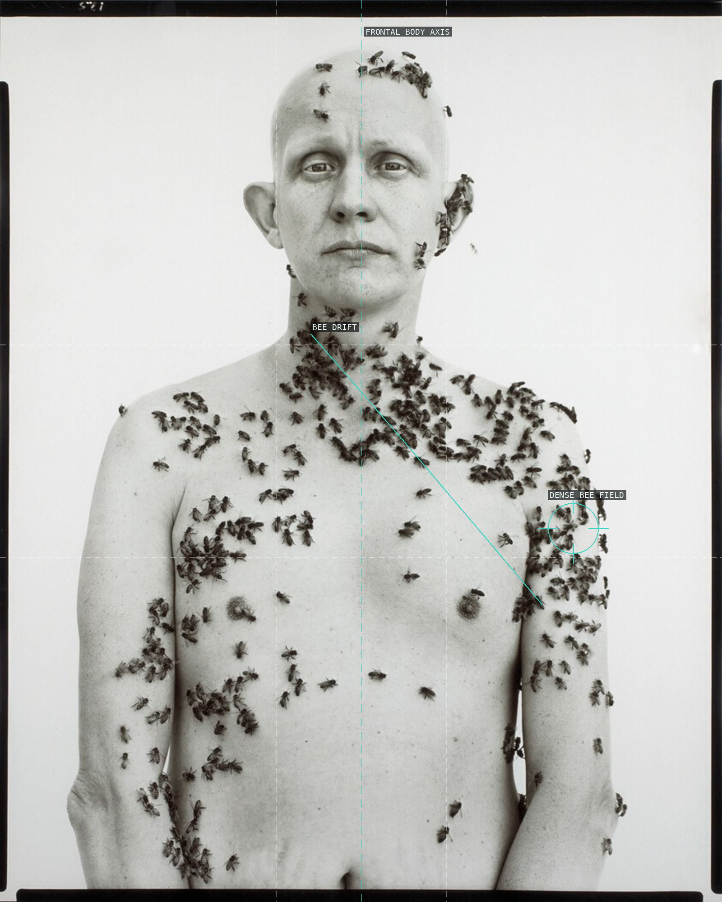
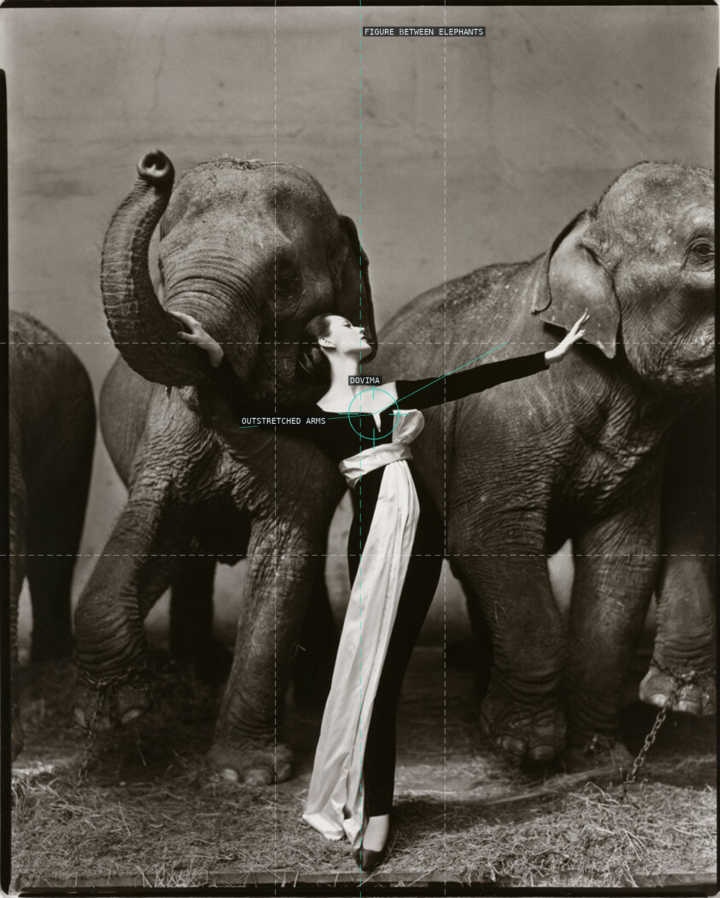
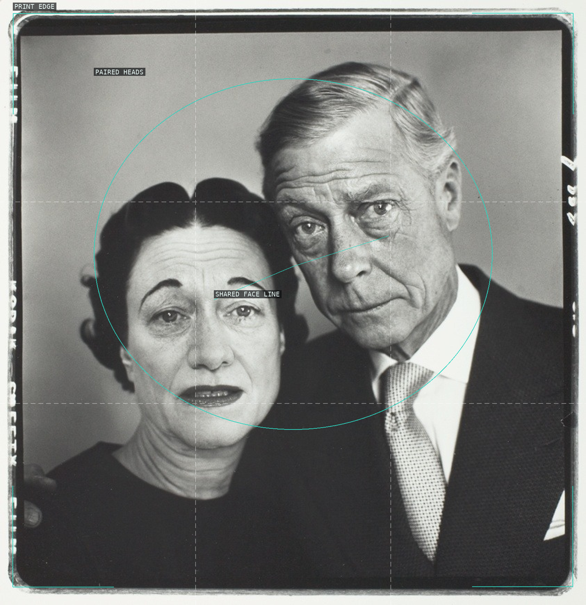
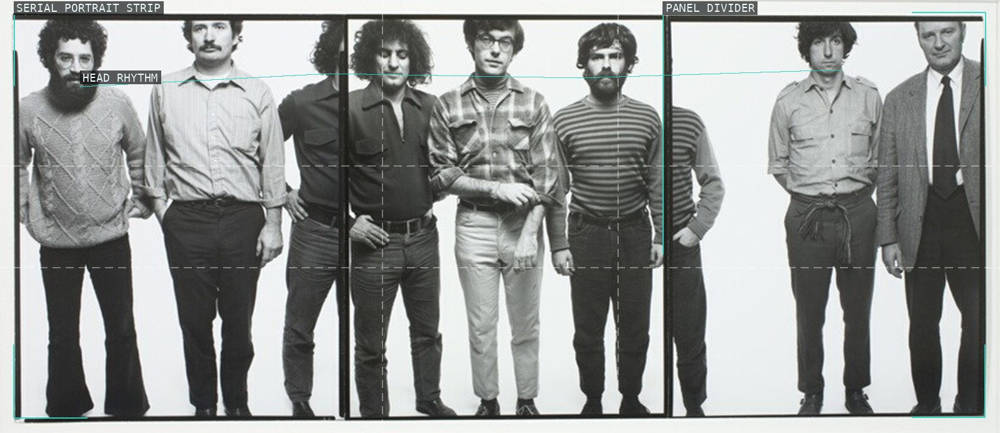
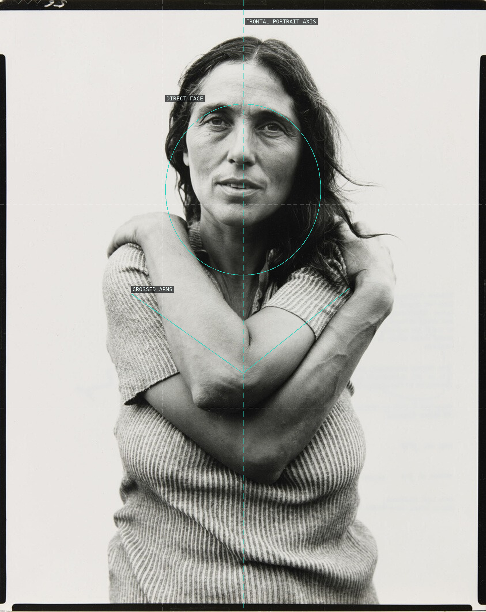
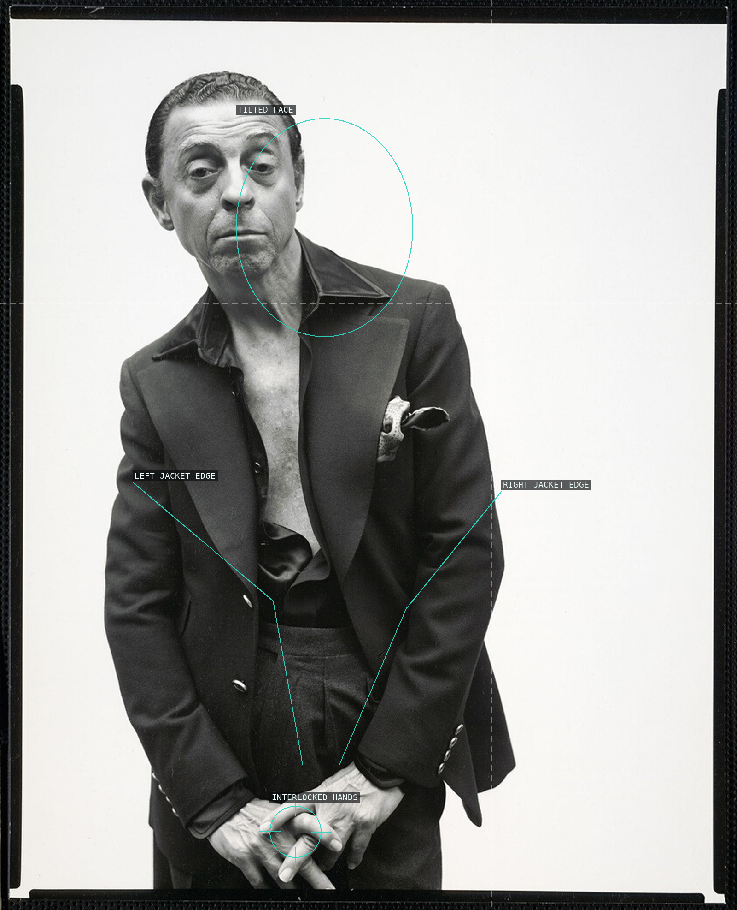
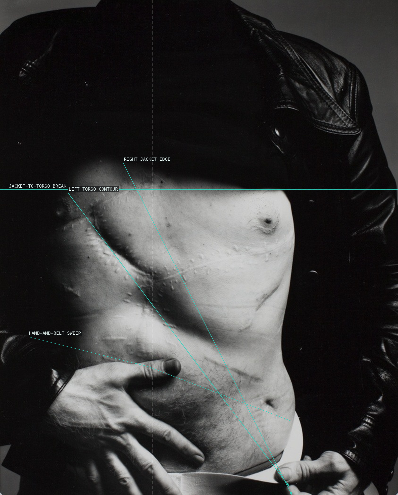

Richard Avedon — overlay proofs

01 — Ronald Fisher, Beekeeper

02 — Dovima with Elephants

03 — The Duke and Duchess of Windsor

04 — The Chicago Seven

05 — Portrait of June Leaf

06 — James Galanos

07 — Andy Warhol